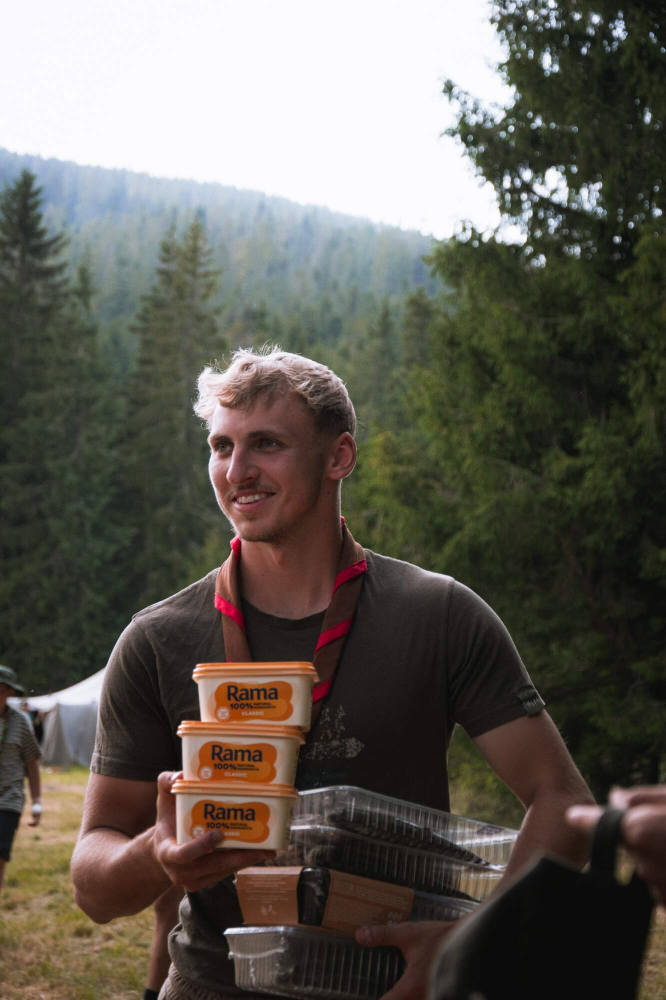

Ahoj, som Matúš
Kto som

Som študent 3. ročníka aplikovanej informatiky na Fakulte elektrotechniky a informatiky STU v Bratislave. Najviac ma baví meniť nápady na fungujúce aplikácie, od webových stránok až po AI agentov, ktorí vedia nahradiť rutinné práce.
Popri štúdiu brigádujem vo Finančnom labe Slovenskej sporiteľne, kde pomocou AI automatizujem reporty a vytváram AI agentov.
Tri veci, v ktorých som doma
- AI a automatizácia Zadávam rutinu AI nástrojom a vytváram z nich agentov, ktorí šetria čas.
- Webový vývoj Weby a appky si staviam sám, od HTML a CSS až po JavaScript.
- Python a práca s dátami Píšem skripty, ktoré spracujú dáta a ušetria mi klikanie v Exceli.
Predmety tohto semestra
- Webové technológie I
- Operačné systémy
- Lineárna algebra 2
- Softvérové inžinierstvo
- Telesná kultúra 5
Kedy ich mám, nájdete v rozvrhu.